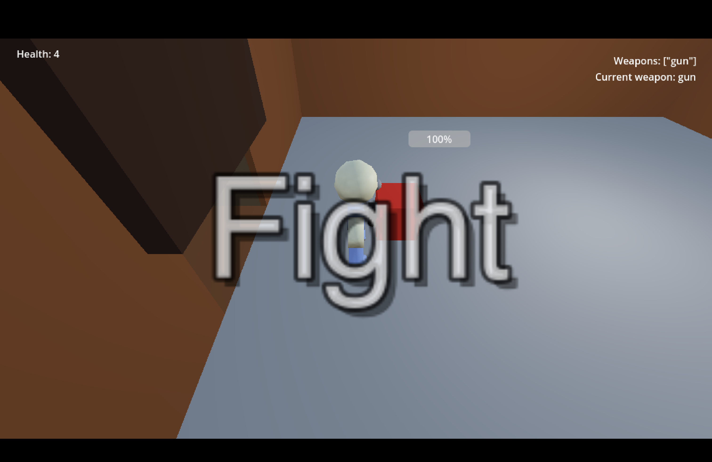
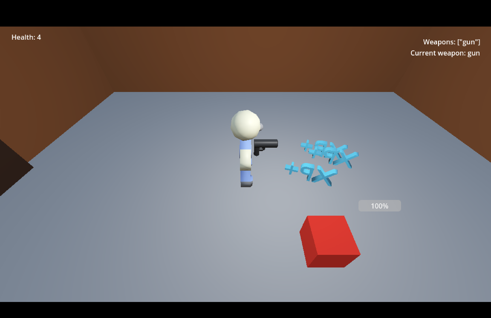

GAME DEVELOPMENT
The Bunker Fell
A single-player escape game that invovles navigating through a bunker, fighting enemies, and upgrading tools to escape.
Overview
This project was the first big project in SIG-Game (when I was SIG-Game lead). Originally everyone pitched an idea and made a prototype; based on that, people voted to create "The Bunker Fell". the project wwas made in a group of 3 (since many people came and went).
Project Information
Lead Developer
March 2024 - November 2025
Completed
Windows PC / Mac / Linux
Key Features
- Utilized a graph for the bunker map
- Used JSON file to store names and locations of objects
- Made use of collisions to simulate attacking enemies
Screenshots


Technical Highlights
- Used a graph to store the layout of the map
- Separated UI logic from core gameplay
- Implemented reusable components
Challenges
One challenge was figuring out how to load objects for different rooms isnce we were planning to use the same scene for each room in the bunker and updating it (by adding enemeis and objects in the room) based on the room number. The solution I came up with was creating a json file that stores a dictionary with the key bring the room id, and the value being an array of objects to load. The array would store dictionaries of objects (The key being the object type, and the value being a list of properties like location and rotation).
Lessons Learned
- How to create / utilize a grpah class
- Using JSON files in Godot
Future Improvements
- Add multiplayer support
- Add more levels
- Add User customization